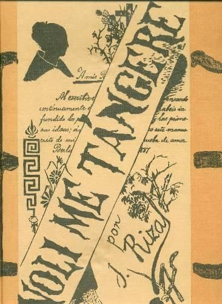

Rizal's Literary Masterpieces
The two novels that exposed colonial abuses and awakened Filipino consciousness

Noli Me Tangere
"Touch Me Not"
Published 1887
Berlin, Germany
First Novel
Plot Summary
The story follows Juan Crisóstomo Ibarra, a young Filipino who returns to his homeland after studying in Europe. He discovers the corruption and abuses of the Spanish colonial government and the Catholic Church, particularly through the character of Padre Dámaso, a corrupt friar.
Key Characters
• Juan Crisóstomo Ibarra - Protagonist
• María Clara - Love interest
• Padre Dámaso - Antagonist friar
• Elías - Ibarra's mysterious friend